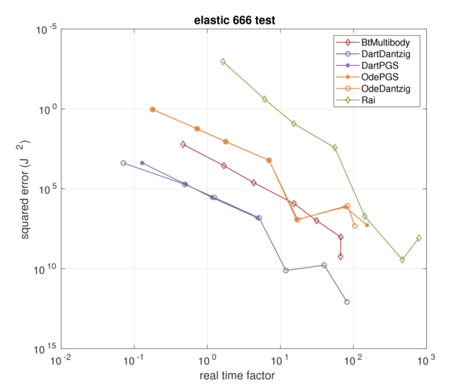
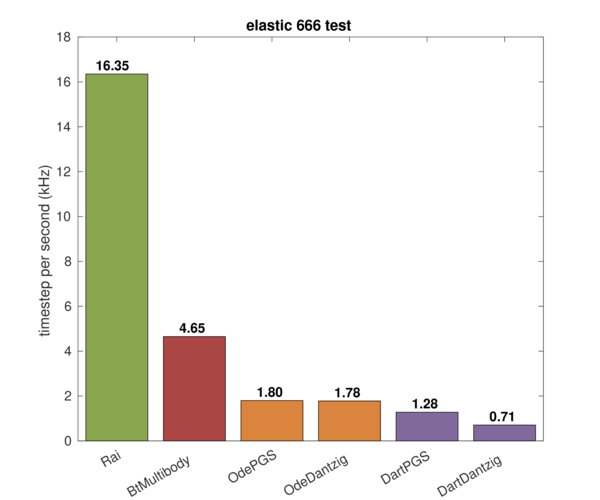

Elastic 666 test

Test scenario
- Perfectly elastic collision (restitutional coefficient = 1)
- Zero friction
- 6 x 6 x 6 number of 10 kg spheres
- Small perturbation in position to collapse
- Metric: system energy
Tested solver list
- Rai
- Bisection solver (Rai solver)
- Bullet
- ODE
MuJoCo[1]
- Dart
Commentary
-
[1] Elastic collision cannot be simulated in MuJoCo. See Bouncing test page for more details.
-
[2] Dart LCP PGS fails with timestep > 0.01: the simulation is blown up. We only report the results with timestep < 0.01 for LCP PGS.
Results
With the same test setup with 666 test, but for elastic collision, we investigated the energy of the system. The result is as follows:


The RaiSim has good energy preservability and also fast contact simulation for the elastic collision of primitive shape objects.